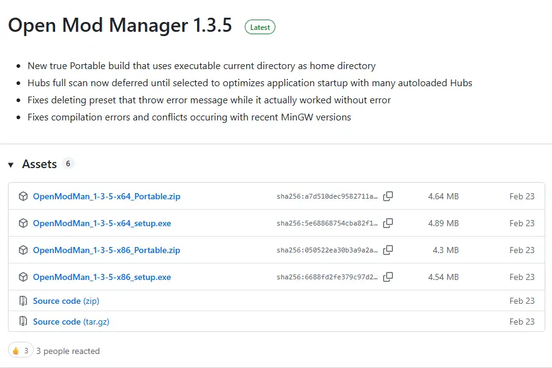

Scarica e installa Open Mod Manager
Apri la pagina di download di Open Mod Manager e scarica l’ultima versione in formato eseguibile, scegliendo x64 o x86 in base al tuo sistema operativo. Avvia il file scaricato e completa il wizard di installazione.
Per evitare problemi di permessi, è consigliato avviare OMM come amministratore, specialmente quando deve scrivere nella cartella principale di DCS.
